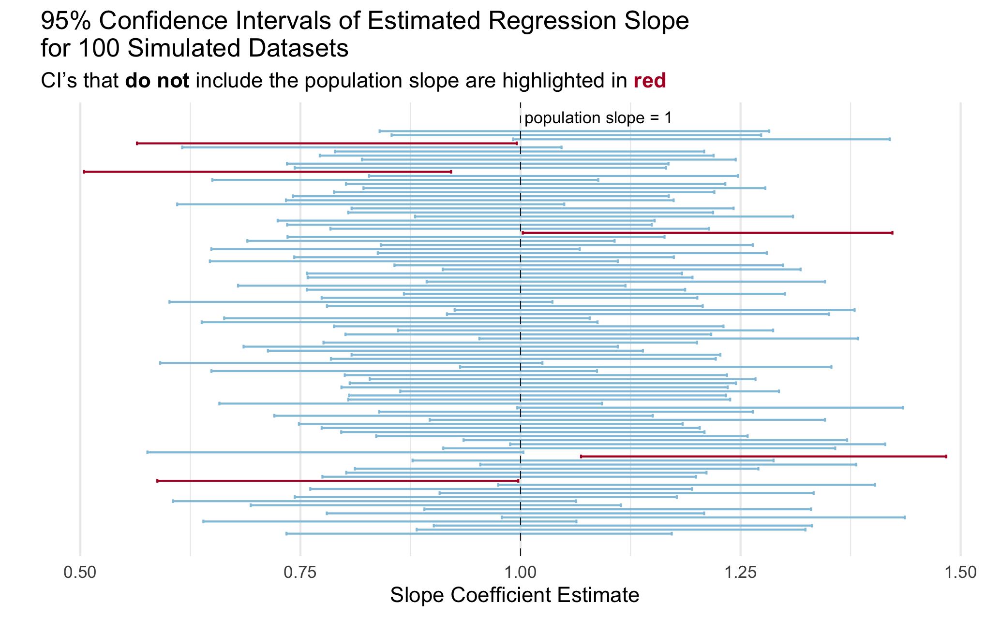

library(tidyverse)
library(broom)Lab 9: Simulation Exploration
Random Babies Simulation
Perhaps you have seen the Random Babies applet? Suppose one night at a hospital some number of babies are born. The hospital is not very organized and looses track of which baby belongs to each parent(s), so they decide to return the babies to parents at random. Here, we are interested in the number of babies that are correctly returned to their respective parent(s).
1. Simulate the distribution of the number of babies that are correctly returned if there were four babies born in a night at our disorganized hospital. Use 10,000 simulations. Make sure to add a line of code to make your simulation reproducible every time you run it.
Tip
First, write a function to accomplish one simulation (i.e. one night), given a number of babies (n_babies) that were born in a hospital on a given night .
Then use map_int() to run 10,000 simulations assuming 4 babies were born.
Keep in mind that your function needs to output a single number (not data frame) for it to be compatible with map_int()!
randomBabies <- function(n_babies){
...
}results <- map_int(.x = 1:10000,
.f =
)Error in map_int(.x = 1:10000, .f = ): argument ".f" is missing, with no default2. Create a table displaying the proportion of simulations where 0, 1, 2, 3, and 4 babies were given to their correct parent(s).
Tip
The output of your map_int() is a vector, but to make a nice table (and plot) you need this to be a data frame! Luckily, the enframe() function does just that–it converts a vector to a data frame.
# Q2 code3. Now create a barplot showing the proportion of simulations where 0, 1, 2, 3, and 4 babies were given to their correct parent(s). Don’t forget a title and appropriate axis labels.
# Q3 codeSimulating Coverage
Many students struggle with the definition of a confidence interval when first learning the concept. The interpretation that a lot of textbooks include is somthing like “if we were to repeat the study many many times, 95% of the confidence intervals would contain the true population parameter.”
We are going to implement a simulation that illustrates this statistical concept using confidence intervals for the slope parameter in a linear regression model.
Let’s break it down into a couple of steps.
As a reminder, the typical population model that we assume for a linear regression is:
\[Y = \beta_0 + \beta_1 X + \varepsilon\] Where \(\beta_0\) and \(\beta_1\) are the population intercept and slope parameters and and \(\varepsilon \sim N(0, \sigma^2)\) is random noise that is normally distributed with mean 0 and variance \(\sigma^2\).
We will design a simulation that uses this “data generating model.”
4. Fill in the code below to generate a synthetic dataset with 100 observations. We will assume that the explanatory variable \(X\) is uniformly distributed from 0 to 1 and that \(\sigma^2\) = 1. The synthetic data should be a dataframe with 100 rows and two columns: x and y.
# define slope and intercept parameters
intercept = 2
slope = 1
# generate x vector
# generate noise `ep` vector
# generate outcome from population model
y = intercept + x*slope + epError: object 'x' not found# create an "observed data" dataframe with only the x and y vectors5. Fit a simple linear regression model of the outcome y on x. Use tidy() from the broom package to extract a dataframe from the lm() output that includes the slope estimate and a 95% confidence interval for the slope estimate.
# Q5 code6. Check whether the true population slope is inside of the estimated 95% confidence interval for that simulated dataset. Specifically, add a variable called cover to the dataframe of estimates you created in the last question (Q5) that is 1 if the population slope is in the interval and 0 if not.
Tip
As a reminder, we set slope = 1 in the data generation (Q4) so the true population slope is \(\beta_1 = 1\).
# Q6 code7. Now put this all together into a function called mycifun! Run the check provided to ensure that it works correctly
The function should have three required arguments:
beta0,beta1, andn(the number of observations in the simulated data).The function should complete the steps in Q4-6 given these arguments:
- generate one synthetic dataset based on the data generating model as above
- fit a linear regression model
- check that the population slope is contained in the estimated 95% confidence interval for the sample slope
The output of the function should be a dataframe/tibble with one row and four columns: the slope estimate, lower bound of the CI, upper bound of the CI, and whether the population slope is within the CI.
# Q7 codemycifun(beta0 = 1, beta1 = 2, n = 1000)Error in mycifun(beta0 = 1, beta1 = 2, n = 1000): could not find function "mycifun"8a. Now run this simulation 1,000 times using map_dfr() and the function you wrote (mycifun()). Generate data with \(\beta_0 = 3\), \(\beta_1 = .5\) and \(n = 100\). Make sure to add a line of code to make your simulation reproducible every time you run it.
ci_dat <- map_dfr(.x = 1:1000,
.f =
)Error in map_dfr(.x = 1:1000, .f = ): argument ".f" is missing, with no default8b. What does one row in the resulting ci_dat represent?
8c. What is your simulated coverage rate? In otherwords, for what proportion of the iterations was the population slope within the estimated 95% confidence interval? Write your answer as a sentence in Markdown using inline code!
9. Create a visualization to illustrate the coverage rate.
You can create any visualization that effectively illustrates the concept. I included a plot below with my idea of an effective plot to illustrate the concept of coverage. Actually, a professor showed me a plot like this in undergrad and I have always remembered it!
Tip
You do not need to exactly copy the plot, even if you choose to do something like it. A couple of hints to get you started on making a plot like this one:
- Check out
geom_errorbar() - Check out
geom_vline()for the line indicating the true population slope - See this slide for code from Dr. Theobold to include colors in a title rather than a legend.
- I took a random sample of 100 simulations to make it easier to look at.

# Q9 code